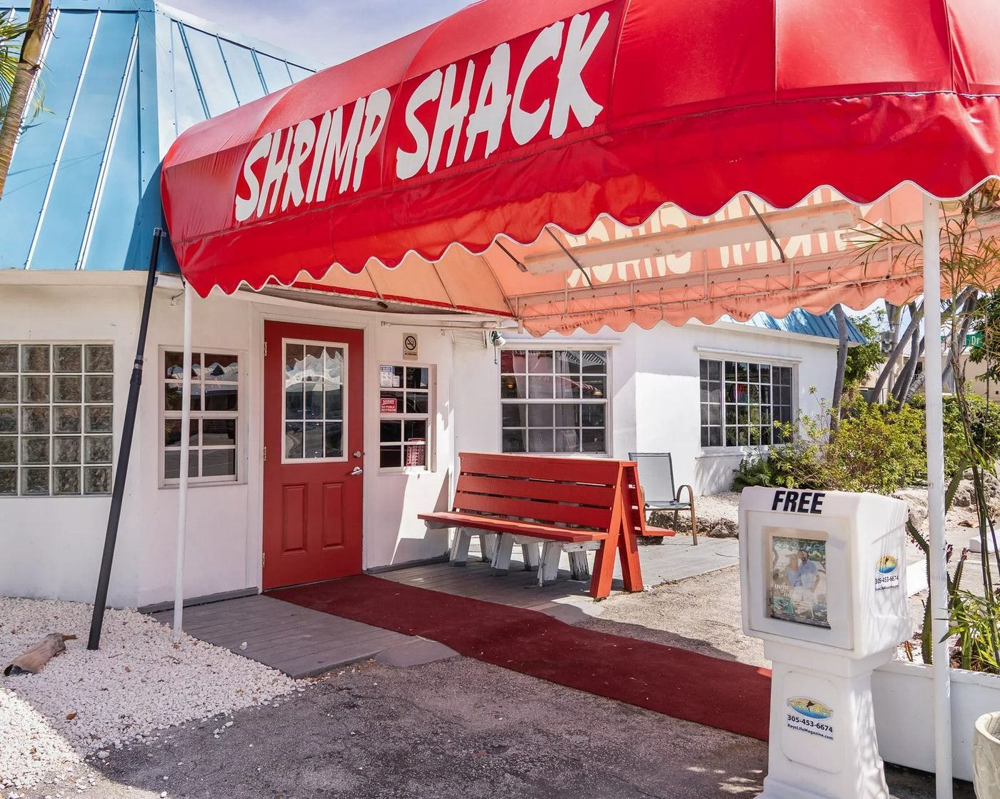
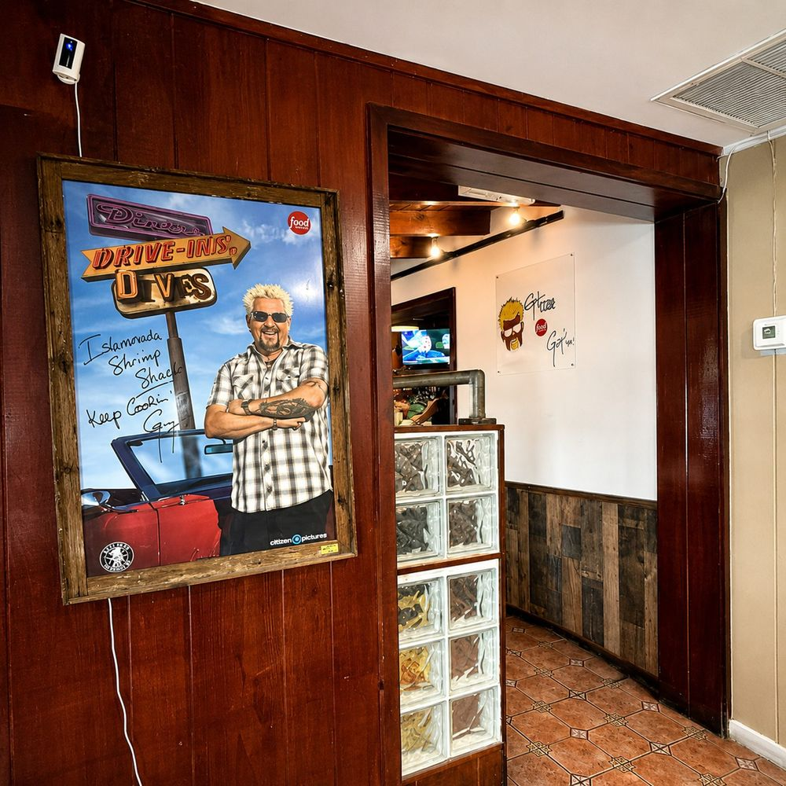
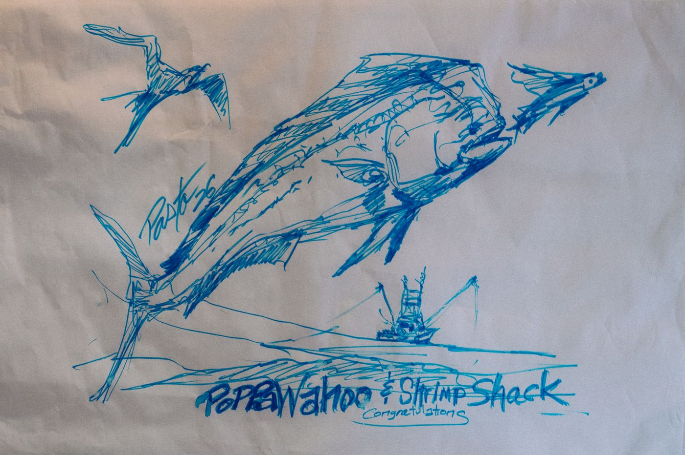

The building goes up
A single-story block building on the oceanside of the highway, 100 feet of frontage. It has never been anything but a place to eat.
Monroe County property record

The Continental Style is born here
At Squid Row, the restaurant that held this address before the Shack, a cook panko-crusts a fillet and finishes it with key lime butter, tomato, scallion and Parmesan. It has not left the menu since. The menu still says so: "Created right here at Squid Row in 1992."

Squid Row becomes the Shrimp Shack
December 2011. A mother and daughter team, Jill and Morgan, open the Islamorada Shrimp Shack as a neighborhood spot, not a tourist trap. The servers get a name of their own: the Shrimpettes. They will tell you the history of Islamorada while your food cooks.

Guy Fieri pulls up
Diners, Drive-Ins and Dives films "Smoke and Seafood" in the kitchen. The Shrimp Fritters, the Fish Senator and the Shrimp N' Grits all make Guy's Picks. The episode airs March 11, 2016, and the signed poster still hangs by the door.
Food Network, Season 24, Episode 4

The Epsteins take the keys
Brian and David Epstein, sons of Miami Herald fishing editor Bob Epstein and owners of the Poppa Wahoo Collective charter fleet, buy the Shack. Veteran owned, family run, and the kitchen keeps every recipe, right down to the fritters. [MONTH OF PURCHASE NEEDED]